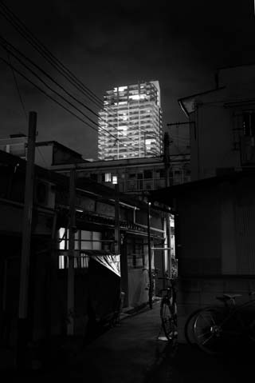
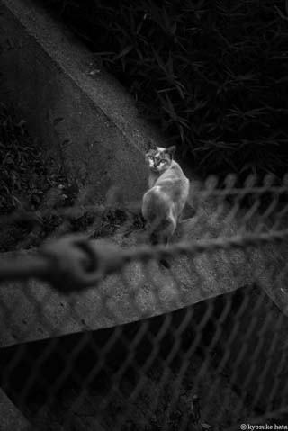

自称
写真家
秦 恭介 / kyosuke HATA
portfolio WEB site
トップ
写真
自己紹介
連絡先
menu
写真 / photograph
わくわく動物ランドの仲間たち
妄想の造形
賢者の眼差し
豪物/植物
自然風景/街頭風景
その他/カラー写真


自己紹介 / profile
秦 恭介
1980年
横浜生まれ。
1982年
兵庫県移住。
幼少期よりプラモデルとお絵描きを嗜むが、体質（色弱）もあり色の扱いが苦手。桃色に塗ったつもりが灰色だったり、色を塗ると全て台無し。周囲からは「下描きだけの男」ともっぱらの評判。
この経験が後にモノクロに傾倒する理由となる。
その後、模型・3DCG・プチ特殊メイク・銀粘土 等、趣味を転々とする。
2008年
トイカメラ「HOLGA」と運命的な出会い (衝動買い）と別れ (すぐに壊れた)を経て、デジタル一眼レフNIKON D80と出会う(衝動買い)。
2009年
波止場写真教室（現、波止場の写真学校）ビギナークラス入学・修了。
美しい風景写真を志すも、
日を追うごとに写真から彩度と明度が落ちていく。
2016年
波止場の写真学校 「北 義昭ゼミ」入学・修了
主な展示
【個展】
賢者の眼差し
ROUND POINT CAFE(2015年)
【公募展・グループ展】
#7
GALLERY Ann(2019年)
関西モノクロ同盟展
メリケンギャラリー(2020年)
受賞歴
なし
出版物
なし
連絡先 / contact
当サイトに関する質問や感想などをお受けしています。
以下のフォームより、必要事項を入力のうえ送信してください。
お名前
メールアドレス
（再度入力）
問合せ種別
ご感想
ご質問
ご依頼
その他
問合せ内容
個人情報の取扱いについて
ご記入いただいた個人情報は、お問い合わせへの対応および確認のためのみに利用します。
また、この目的のためにお問い合わせの記録を残すことがあります。


{kind=link}
{kind=link}
{kind=link}
{kind=link}
{kind=link}
{kind=link}
{kind=link}
{kind=link}
{kind=link}
{kind=link}
{kind=link}
{kind=link}
{kind=link}
{kind=link}